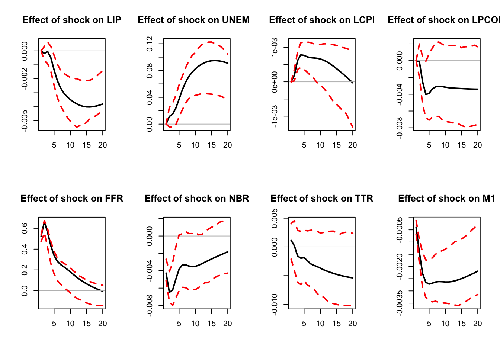
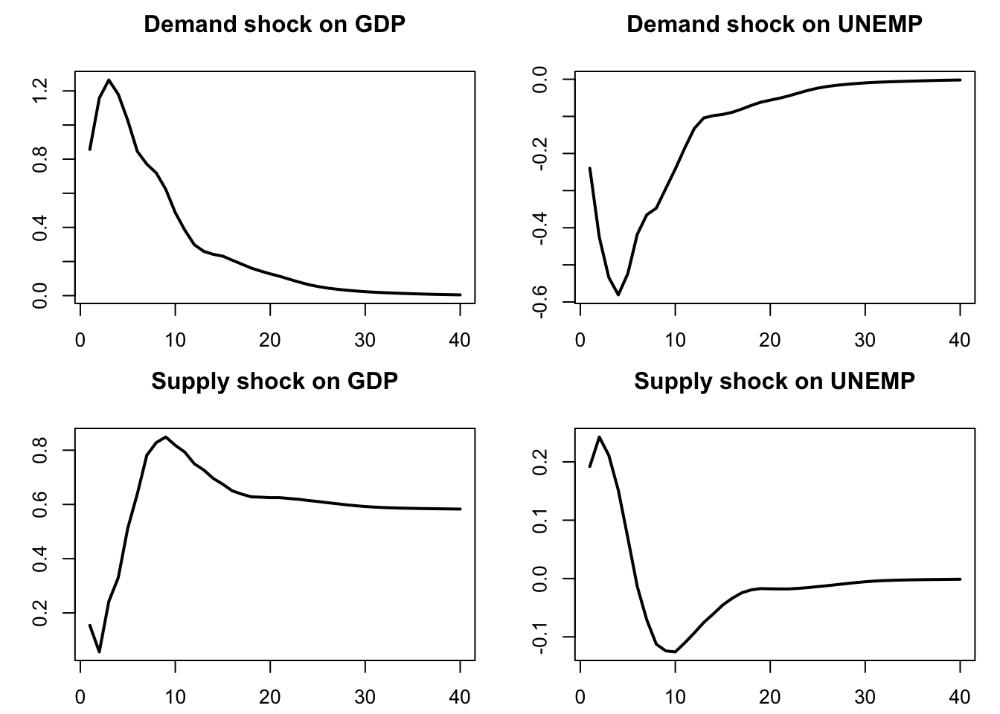
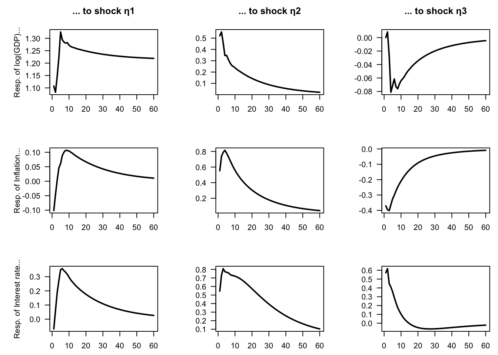

Chapter 2 Identification problem and standard identification techniques
2.1 The identification problem
In Section 1.4, we have seen how to estimate \(\mathbb{V}ar(\varepsilon_t) =\Omega\) and the \(\Phi_k\) matrices in the context of a VAR model. But the IRFs are functions of \(B\) and of the \(\Phi_k\)’s, not of \(\Omega\) the \(\Phi_k\)’s (see Section 1.2). We have \(\Omega = BB'\), which provides some restrictions on the components of \(B\), but this is not sufficient to fully identify \(B\). Indeed, seen a system of equations whose unknowns are the \(b_{i,j}\)’s (components of \(B\)), the system \(\Omega = BB'\) contains only \(n(n+1)/2\) linearly independent equations. For instance, for \(n=2\): \[\begin{eqnarray*} &&\left[ \begin{array}{cc} \omega_{11} & \omega_{12} \\ \omega_{12} & \omega_{22} \end{array} \right] = \left[ \begin{array}{cc} b_{11} & b_{12} \\ b_{21} & b_{22} \end{array} \right]\left[ \begin{array}{cc} b_{11} & b_{21} \\ b_{12} & b_{22} \end{array} \right]\\ &\Leftrightarrow&\left[ \begin{array}{cc} \omega_{11} & \omega_{12} \\ \omega_{12} & \omega_{22} \end{array} \right] = \left[ \begin{array}{cc} b_{11}^2+b_{12}^2 & \color{red}{b_{11}b_{21}+b_{12}b_{22}} \\ \color{red}{b_{11}b_{21}+b_{12}b_{22}} & b_{22}^2 + b_{21}^2 \end{array} \right]. \end{eqnarray*}\]
We then have 3 linearly independent equations but 4 unknowns. Therefore, \(B\) is not identified based on second-order moments. Additional restrictions are required to identify \(B\). This section covers two standard identification schemes: short-run and long-run restrictions.
- A short-run restriction (SRR) prevents a structural shock from affecting an endogenous variable contemporaneously.
- It is easy to implement: the appropriate entries of \(B\) are set to 0.
- A particular (popular) case is that of the Cholesky, or recursive approach (Sections 2.3 and 2.4).
- Examples include Bernanke (1986), Sims (1986), Galí (1992), Ruibio-Ramírez, Waggoner, and Zha (2010).
- A long-run restriction (LRR) prevents a structural shock from having a cumulative impact on one of the endogenous variables (Section 2.5).
- Additional computations are required to implement this. One needs to compute the cumulative effect of one of the structural shocks \(u_{t}\) on one of the endogenous variable.
- Examples include Blanchard and Quah (1989), Faust and Leeper (1997), Galí (1999), Erceg, Guerrieri, and Gust (2005), Christiano, Eichenbaum, and Vigfusson (2007).
As illustrated by Section 2.6, the two approaches can be combined (see, e.g., Gerlach and Smets (1995)).
2.2 A stylized example motivating short-run restrictions
Let us consider a simple example that could motivate short-run restrictions. Consider the following stylized macro model: \[\begin{equation} \begin{array}{clll} g_{t}&=& \bar{g}-\lambda(i_{t-1}-\mathbb{E}_{t-1}\pi_{t})+ \underbrace{{\color{blue}\sigma_d \eta_{d,t}}}_{\mbox{demand shock}}& (\mbox{IS curve})\\ \Delta \pi_{t} & = & \beta (g_{t} - \bar{g})+ \underbrace{{\color{blue}\sigma_{\pi} \eta_{\pi,t}}}_{\mbox{cost push shock}} & (\mbox{Phillips curve})\\ i_{t} & = & \rho i_{t-1} + \left[ \gamma_\pi \mathbb{E}_{t}\pi_{t+1} + \gamma_g (g_{t} - \bar{g}) \right]\\ && \qquad \qquad+\underbrace{{\color{blue}\sigma_{mp} \eta_{mp,t}}}_{\mbox{Mon. Pol. shock}} & (\mbox{Taylor rule}), \end{array}\tag{2.1} \end{equation}\] where: \[\begin{equation} \eta_t = \left[ \begin{array}{c} \eta_{\pi,t}\\ \eta_{d,t}\\ \eta_{mp,t} \end{array} \right] \sim i.i.d.\,\mathcal{N}(0,I).\tag{2.2} \end{equation}\]
Vector \(\eta_t\) is assumed to be a vector of structural shocks, mutually and serially independent. On date \(t\):
- \(g_t\) is contemporaneously affected by \(\eta_{d,t}\) only;
- \(\pi_t\) is contemporaneously affected by \(\eta_{\pi,t}\) and \(\eta_{d,t}\);
- \(i_t\) is contemporaneously affected by \(\eta_{mp,t}\), \(\eta_{\pi,t}\) and \(\eta_{d,t}\).
System (2.1) could be rewritten as follows: \[\begin{equation} \left[\begin{array}{c} g_t\\ \pi_t\\ i_t \end{array}\right] = \Phi(L) \left[\begin{array}{c} g_{t-1}\\ \pi_{t-1}\\ i_{t-1} + \end{array}\right] +\underbrace{\underbrace{ \left[ \begin{array}{ccc} 0 & \bullet & 0 \\ \bullet & \bullet & 0 \\ \bullet & \bullet & \bullet \end{array} \right]}_{=B} \eta_t.}_{=\varepsilon_t}\tag{2.3} \end{equation}\]
This is the reduced-form of the model. This representation suggests three additional restrictions on the entries of \(B\); the latter matrix is therefore identified as soon as \(\Omega = BB'\) is known (up to the signs of its columns).
2.3 Cholesky: a specific short-run-restriction situation
There are particular cases in which some well-known matrix decomposition of \(\Omega=\mathbb{V}ar(\varepsilon_t)\) can be used to easily estimate some specific SVAR. This is the case for the so-called Cholesky decomposition. Consider the following context:
- A first shock (say, \(\eta_{n_1,t}\)) can affect instantaneously (i.e., on date \(t\)) only one of the endogenous variable (say, \(y_{n_1,t}\));
- A second shock (say, \(\eta_{n_2,t}\)) can affect instantaneously (i.e., on date \(t\)) two endogenous variables, \(y_{n_1,t}\) (the same as before) and \(y_{n_2,t}\);
- \(\dots\)
This implies
- that column \(n_1\) of \(B\) has only 1 non-zero entry (this is the \(n_1^{th}\) entry),
- that column \(n_2\) of \(B\) has 2 non-zero entries (the \(n_1^{th}\) and the \(n_2^{th}\) ones), etc.
Without loss of generality, we can set \(n_1=n\), \(n_2=n-1\), etc. In this context, matrix \(B\) is lower triangular. The Cholesky decomposition of \(\Omega_{\varepsilon}\) then provides an appropriate estimate of \(B\), since this matrix decomposition yields to a lower triangular matrix satisfying: \[ \Omega_\varepsilon = BB'. \]
For instance, Dedola and Lippi (2005) estimate 5 structural VAR models for the US, the UK, Germany, France and Italy to analyse the monetary-policy transmission mechanisms. They estimate SVAR(5) models over the period 1975-1997. The shock-identification scheme is based on Cholesky decompositions, the ordering of the endogenous variables being: (1) the industrial production, (2) the consumer price index, (3) a commodity price index, (4) the short-term rate, (5) monetary aggregate and (6) the effective exchange rate (except for the US). This ordering implies that monetary policy (i.e., the short-term rate) reacts to the shocks affecting the first three variables but that the latter react to monetary policy shocks with a one-period lag only.
Consider again the small structural example discussed above, whose reduced-form VAR representation is given in Eq. (2.3). If we reorder the structural shocks as \(\eta_t = (\eta_{d,t},\eta_{\pi,t},\eta_{mp,t})'\) (the order being arbitrary), the impact matrix \(B\) can be written as \[ B = \begin{bmatrix} \bullet & 0 & 0 \\ \bullet & \bullet & 0 \\ \bullet & \bullet & \bullet \end{bmatrix}, \] that is, \(B\) corresponds to the Cholesky factor of \(\Omega\).
However, it is not always possible to obtain a lower-triangular \(B\) matrix by reordering the structural shocks. For instance, if for a given ordering we have \[ B = \begin{bmatrix} 0 & \bullet & \bullet \\ \bullet & 0 & \bullet \\ \bullet & \bullet & 0 \end{bmatrix}, \] then no reordering of the shocks will produce a lower-triangular structure.
The Cholesky approach has been used in the previous chapter, in Example 1.6 (see Figure 1.5).
2.4 Using Cholesky to identify a single shock
In some cases, the Cholesky approach can be employed when interest centers on a single structural shock. This is the case, for example, in Christiano, Eichenbaum, and Evans (1996). Their identification is based on the following relationship between \(\varepsilon_t\) and \(\eta_t\): \[\begin{equation} \left[\begin{array}{c} \boldsymbol\varepsilon_{S,t}\\ \varepsilon_{r,t}\\ \boldsymbol\varepsilon_{F,t} \end{array}\right] = \left[\begin{array}{ccc} B_{SS} & 0 & 0 \\ B_{rS} & B_{rr} & 0 \\ B_{FS} & B_{Fr} & B_{FF} \end{array}\right] \left[\begin{array}{c} \boldsymbol\eta_{S,t}\\ \eta_{r,t}\\ \boldsymbol\eta_{F,t} \end{array}\right],\tag{2.4} \end{equation}\] where \(S\), \(r\) and \(F\) respectively correspond to slow-moving variables, the policy variable (short-term rate) and fast-moving variables. While \(\eta_{r,t}\) is scalar, \(\boldsymbol\eta_{S,t}\) and \(\boldsymbol\eta_{F,t}\) may be vectors. The space spanned by \(\boldsymbol\varepsilon_{S,t}\) is the same as that spanned by \(\boldsymbol\eta_{S,t}\). As a result, because \(\varepsilon_{r,t}\) is a linear combination of \(\eta_{r,t}\) and \(\boldsymbol\eta_{S,t}\) (which are \(\perp\)), it comes that the \(B_{rr}\eta_{r,t}\)’s are the (population) residuals in the regression of \(\varepsilon_{r,t}\) on \(\boldsymbol\varepsilon_{S,t}\). Because \(\mathbb{V}ar(\eta_{r,t})=1\), \(B_{rr}\) is given by the square root of the variance of \(B_{rr}\eta_{r,t}\). \(B_{F,r}\) is finally obtained by regressing the components of \(\boldsymbol\varepsilon_{F,t}\) on the estimates of \(\eta_{r,t}\).
A critical observation is that all matrices \(B\) with the block form in Eq. ((ref?)(eq:BCEE)) (with \(B_{rr}>0\)) and satisfying \(\Omega=BB'\) share the same intermediate column (that is, the same \(B_{rr}\) and \(B_{Fr}\)). One such \(B\) is obtained directly from the Cholesky decomposition of \(\Omega=BB'\).
library(IdSS)
library(vars)
data("USmonthly")
# Select sample period:
First.date <- "1965-01-01";Last.date <- "1995-06-01"
indic.first <- which(USmonthly$DATES==First.date)
indic.last <- which(USmonthly$DATES==Last.date)
USmonthly <- USmonthly[indic.first:indic.last,]
considered.variables <- c("LIP","UNEMP","LCPI","LPCOM","FFR","NBR","TTR","M1")
y <- as.matrix(USmonthly[considered.variables])
res.svar.ordering <- svar.ordering(y,p=3,
posit.of.shock = 5,
nb.periods.IRF = 20,
inference = 1,
nb.draws = 100,
confidence.interval = 0.90, # expressed in pp.
indic.plot = 1 # Plots are displayed if = 1.
)
Figure 2.1: Response to a monetary-policy shock. Identification approach of Christiano, Eichenbaum and Evans (1996). Confidence intervals are obtained by boostrapping the estimated VAR model (see inference section).
2.5 Long-run restrictions
Let us now turn to long-run restrictions. Such a restriction concerns the long-run influence of a shock on an endogenous variable. Let us consider for instance a structural shock that is assumed to have no “long-run influence” on GDP. How to express this? The long-run change in GDP can be expressed as \(GDP_{t+h} - GDP_t\), with \(h\) large. Note further that: \[ GDP_{t+h} - GDP_t = \Delta GDP_{t+h} +\Delta GDP_{t+h-1} + \dots + \Delta GDP_{t+1}. \] Hence, the fact that a given structural shock (\(\eta_{i,t}\), say) has no long-run influence on GDP means that \[ \lim_{h\rightarrow\infty}\frac{\partial GDP_{t+h}}{\partial \eta_{i,t}} = \lim_{h\rightarrow\infty} \frac{\partial}{\partial \eta_{i,t}}\left(\sum_{k=1}^h \Delta GDP_{t+k}\right)= 0. \]
As shown in the following sections, this long-run effect can be formulated as a function of \(B\) and of the matrices \(\Phi_i\) when \(y_t\) (including \(\Delta GDP_t\)) follows a VAR process.
2.5.1 The VAR(1) case
Let us start with the VAR(1) case. We have: \[\begin{eqnarray*} y_{t} &=& c+\Phi y_{t-1}+\varepsilon_{t}\\ & = & c+\varepsilon_{t}+\Phi(c+\varepsilon_{t-1})+\ldots+\Phi^{k}(c+\varepsilon_{t-k})+\ldots \\ & = & \mu +\varepsilon_{t}+\Phi\varepsilon_{t-1}+\ldots+\Phi^{k}\varepsilon_{t-k}+\ldots \\ & = & \mu +B\eta_{t}+\Phi B\eta_{t-1}+\ldots+\Phi^{k}B\eta_{t-k}+\ldots, \end{eqnarray*}\] which is the Wold representation of \(y_t\).
The sequence of shocks \(\{\eta_t\}\) determines the sequence \(\{y_t\}\). What if \(\{\eta_t\}\) is replaced with \(\{\tilde{\eta}_t\}\), where \(\tilde{\eta}_t=\eta_t\) if \(t \ne s\) and \(\tilde{\eta}_s=\eta_s + \gamma\)? Assume \(\{\tilde{y}_t\}\) is the associated “perturbated” sequence. We have \(\tilde{y}_t = y_t\) if \(t<s\). For \(t \ge s\), the Wold decomposition of \(\{\tilde{y}_t\}\) implies: \[ \tilde{y}_t = y_t + \Phi^{t-s} B \gamma. \] Therefore, the cumulative impact of \(\gamma\) on \(\tilde{y}_t\) will be (for \(t \ge s\)): \[\begin{eqnarray} (\tilde{y}_t - y_t) + (\tilde{y}_{t-1} - y_{t-1}) + \dots + (\tilde{y}_s - y_s) &=& \nonumber \\ (Id + \Phi + \Phi^2 + \dots + \Phi^{t-s}) B \gamma.&& \tag{2.5} \end{eqnarray}\]
Consider a shock on \(\eta_{1,t}\), with a magnitude of \(1\). This shock corresponds to \(\gamma = [1,0,\dots,0]'\). Given Eq. (2.5), the long-run cumulative effect of this shock on the endogenous variables is given by: \[ \underbrace{\underbrace{(Id+\Phi+\ldots+\Phi^{k}+\ldots)}_{=(Id - \Phi)^{-1}}B}_{=: \Theta}\left[\begin{array}{c} 1\\ 0\\ \vdots\\ 0\end{array}\right], \] which is the first column of the \(n \times n\) matrix \(\Theta := (Id - \Phi)^{-1}B\).
In this context, consider the following long-run restriction: “the \(j^{th}\) structural shock has no cumulative impact on the \(i^{th}\) endogenous variable”. It is equivalent to \[ \Theta_{ij}=0, \] where \(\Theta_{ij}\) is the element \((i,j)\) of \(\Theta\).
If \(n(n-1)/2\) restrictions of this type can be made, then \(B\) is identified. In particular, in the case case where \(\Theta\) is lower-triangular, the problem admits an analytical solution. Indeed, let \(J = (I - \Phi)^{-1}\) (assumed to be invertible). We want \(\Theta = JB\) to be lower triangular and \(\Omega = BB'\). Since \(B = J^{-1} \Theta\), we have \[ \Omega = BB' = J^{-1} \Theta \Theta' (J^{-1})' \;\Rightarrow\; J\Omega J' = \Theta \Theta'. \] Since \(\Omega\) is positive definite and \(J\) is invertible, \(\Sigma = J\Omega J'\) is positive definite. Take the (unique, with positive diagonal) Cholesky factorization \(\Sigma = \Theta \Theta'\) with \(\Theta\) lower triangular. Then set \(B = J^{-1} \Theta\). This \(B\) satisfies \(\Omega = BB'\) and \((I - \Phi)^{-1}B = \Theta\) is lower triangular.
2.5.2 The VAR(\(p\)) case
Several of the developments made above are still valid in the VAR(\(p\)) case since a VAR(\(p\)) process can be rewritten as a VAR(1) process by augmenting the state vector. More specifically, stack the last \(p\) values of vector \(y_t\) in vector \(y_{t}^{*}=[y_t',\dots,y_{t-p+1}']'\); Eq. (1.1) can then be rewritten in its companion form: \[\begin{equation} y_{t}^{*} = \underbrace{\left[\begin{array}{c} c\\ 0_{n \times 1}\\ \vdots\\ 0_{n \times 1}\end{array}\right]}_{=c^*}+ \underbrace{\left[\begin{array}{cccc} \Phi_{1} & \Phi_{2} & \cdots & \Phi_{p}\\ I & 0 & \cdots & 0\\ 0 & \ddots & 0 & 0\\ 0 & 0 & I & 0\end{array}\right]}_{=\Phi} y_{t-1}^{*}+ \underbrace{\left[\begin{array}{c} \varepsilon_{t}\\ 0_{n \times 1}\\ \vdots\\ 0_{n \times 1}\end{array}\right]}_{\varepsilon_t^*},\tag{2.6} \end{equation}\] where matrices \(\Phi\) and \(\Omega^*:= \mathbb{V}ar(\varepsilon_t^*)\) are of dimension \(np \times np\). Matrix \(\Phi\) had been introduced in Eq. (1.9), and \[ \Omega^* := \mathbb{V}ar(\varepsilon_t^*)= \left[\begin{array}{c} B \\ 0_{n \times n} \\ \vdots \\ 0_{n \times n} \end{array}\right]\left[\begin{array}{cccc} B & 0_{n \times n} & \dots & 0_{n \times n} \end{array}\right] = \left[\begin{array}{cccc} \Omega & 0_{n \times n} & \dots & 0_{n \times n} \\ 0_{n \times n} & 0_{n \times n} \\ \vdots &&\ddots\\ 0_{n \times n} & \dots &&0_{n \times n} \end{array}\right]. \] In that context, the long-run effect on \(y_t^*+y_{t+1}^*+y_{t+2}^*+\dots\) of a change in \(\eta_t\) by \(\gamma\) (that happens on date \(t\)) is given by: \[ \underbrace{(Id+\Phi+\ldots+\Phi^{k}+\ldots)}_{=(Id - \Phi)^{-1}}\left[\begin{array}{c} B \\ 0_{n \times n} \\ \vdots \\ 0_{n \times n} \end{array}\right]\gamma. \] In particular, the cumulated effect of this shock on \(y_t\) (and not \(y_t^*\) anymore) is \(J B \gamma\), where \(J\) is the upper-left \(n \times n\) submatrix of \((I - \Phi)^{-1}\). Let us denote the matrix \(J B\) by \(\Theta\). With these notations, the long-run restriction: the \(j^{th}\) structural shock has no cumulative impact on the \(i^{th}\) endogenous variable is equivalent to the fact that the component \((i,j)\) of \(\Theta\) is equal to zero.
If \(n(n-1)/2\) restrictions of this type can be made, then \(B\) is identified. In particular, in the case where \(\Theta\) is lower triangular, the problem admits an analytical solution. Using \(B = J^{-1} \Theta\), we get \[ \Omega = B B' = J^{-1} \Theta \Theta' (J^{-1})' \;\Rightarrow\; J \Omega J' = \Theta \Theta'. \] Since \(\Omega\) is positive definite, \(\Sigma = J \Omega J'\) is positive definite. Take the (unique, with positive diagonal) Cholesky factorization \(\Sigma = \Theta \Theta'\) with \(\Theta\) lower triangular. Then set \(B = J^{-1} \Theta\). This \(B\) satisfies \(\Omega = B B'\) and \(J B = \Theta\) is lower triangular.
2.5.3 Blanchard and Quah (1989)
Blanchard and Quah (1989) have implemented such long-run restrictions in a small-scale VAR. Two variables are considered: GDP and unemployment. Consequently, the VAR is affected by two types of shocks. Specifically, authors want to identify supply shocks (that can have a permanent effect on output) and demand shocks (that cannot have a permanent effect on output).7
Blanchard and Quah (1989)’s dataset is quarterly, spanning the period from 1950:2 to 1987:4. Their VAR features 8 lags. Here are the data they use:
library(IdSS)
data(BQ)
par(mfrow=c(1,2))
plot(BQ$Date,BQ$Dgdp,type="l",main="GDP quarterly growth rate",
xlab="",ylab="",lwd=2)
plot(BQ$Date,BQ$unemp,type="l",ylim=c(-3,6),main="Unemployment rate (gap)",
xlab="",ylab="",lwd=2)
Figure 2.2: These data come from Blanchard and Quah (1989). GDP growth rates are calculated as the first differences of the logarithm of GDP.
Estimate a reduced-form VAR(8) model:
library(vars)
y <- BQ[,2:3]
n <- dim(y)[2]
p <- 8
est.VAR <- VAR(y,p=p)
Omega <- var(residuals(est.VAR))Let us employ the approach described above:
Phi <- Acoef(est.VAR)
PHI <- make.PHI(Phi)
A <- diag(n*p) - PHI
J <- solve(A)[1:n,1:n]
Sigma <- J %*% Omega %*% t(J)
L <- t(chol(Sigma))
B <- solve(J) %*% L
print(B)## [,1] [,2]
## [1,] 0.1541392 -0.8570365
## [2,] 0.1921245 0.2396346Alternatively, one may adopt a numerical approach by defining a loss function (loss) that equals zero when both conditions are satisfied: (a) \(BB' = \Omega\), and (b) the \((1,1)\) element of \(\Theta = (I - \Phi)^{-1}B\) is equal to zero.
# Compute (Id - Phi)^{-1}:
Phi <- Acoef(est.VAR)
PHI <- make.PHI(Phi)
sum.PHI.k <- solve(diag(dim(PHI)[1]) - PHI)[1:2,1:2]
loss <- function(param){
B <- matrix(param,2,2)
X <- Omega - B %*% t(B)
Theta <- sum.PHI.k[1:2,1:2] %*% B
loss <- 10000 * ( X[1,1]^2 + X[2,1]^2 + X[2,2]^2 + Theta[1,1]^2 )
return(loss)
}
res.opt <- optim(c(1,0,0,1),loss,method="BFGS",hessian=FALSE)
print(res.opt$par)## [1] 0.8570358 -0.2396345 0.1541395 0.1921221(Note: one can use that type of approach, based on a loss function, to mix short- and long-run restrictions.)
Figure 2.3 displays the resulting IRFs. Note that, for GDP, we cumulate the GDP growth IRF, so as to have the response of the GDP in level.
## Dgdp unemp
## Dgdp 0.7582704 -0.17576173 0.7582694 -0.17576173
## unemp -0.1757617 0.09433658 -0.1757617 0.09433558nb.sim <- 40
par(mfrow=c(2,2));par(plt=c(.15,.95,.15,.8))
Y <- simul.VAR(c=matrix(0,2,1),Phi,B.hat,nb.sim,y0.star=rep(0,2*8),
indic.IRF = 1,u.shock = c(1,0))
plot(cumsum(Y[,1]),type="l",lwd=2,xlab="",ylab="",main="Demand shock on GDP")
plot(Y[,2],type="l",lwd=2,xlab="",ylab="",main="Demand shock on UNEMP")
Y <- simul.VAR(c=matrix(0,2,1),Phi,B.hat,nb.sim,y0.star=rep(0,2*8),
indic.IRF = 1,u.shock = c(0,1))
plot(cumsum(Y[,1]),type="l",lwd=2,xlab="",ylab="",main="Supply shock on GDP")
plot(Y[,2],type="l",lwd=2,xlab="",ylab="",main="Supply shock on UNEMP")
Figure 2.3: IRF of GDP and unemployment to demand and supply shocks.
2.6 Mixing short- and long-run restrictions
We have seen above that the matrix \(B\) can be identified by imposing \(n(n-1)/2\) restrictions on the short-run or long-run impacts of the shocks. It is also possible to combine short-run and long-run restrictions, provided that their total number still equals \(n(n-1)/2\).
In practice, such hybrid identification schemes often need to be implemented numerically, as closed-form expressions are not always available. To illustrate, consider a three-variable model including the first difference of log GDP, inflation, and a short-term interest rate. We aim to identify three structural shocks. We assume the existence of a supply shock, which is the only shock with a long-run effect on GDP, and two demand shocks (this provides two restrictions). Among the latter, one is a monetary policy shock, identified by imposing that it has no contemporaneous impact on GDP.
The following code chunk implements this identification strategy using Canadian data:
library(vars) # provides 'VARselect' function
library(IdSS) # dataset is included here
# Make dataset: ----------------------------------------------------------------
ctry <- "CAN" # select country in the "international" dataset
data <- international[,c("date",
paste("GDP_",ctry,sep=""),
paste("CPI_",ctry,sep=""),
paste("STR_",ctry,sep=""))]
data <- data[complete.cases(data),] # remove missing data
TT <- dim(data)[1] # sample length
data$dy <- data$GDP_
data$pi <- data$CPI_
data$str <- data$STR_
Y <- data[c("dy","pi","str")]
n <- dim(Y)[2]
# VAR estimation: --------------------------------------------------------------
p <- 4
estVAR <- VAR(Y, p = p) # estimate the VAR model
Phi <- Acoef(estVAR)
eps <- residuals(estVAR)
Omega <- var(eps) # covariance matrix of OLS residuals
# Indentify B using mixed approach: --------------------------------------------
# Compute (Id - Phi)^{-1}:
PHI <- make.PHI(Phi)
sum.PHI.k <- solve(diag(dim(PHI)[1]) - PHI)[1:n,1:n]
# Define loss function:
loss <- function(param){
B <- matrix(param,n,n)
X <- Omega - B %*% t(B)
Theta <- sum.PHI.k[1:n,1:n] %*% B
loss <- 100000 * ( sum(X^2) + Theta[1,2]^2 + Theta[1,3]^2 + B[1,3]^2)
return(loss)
}
res.opt <- optim(c(diag(n)),loss,method="BFGS",hessian=FALSE)
B <- matrix(res.opt$par,n,n)
# Make IRFs: -------------------------------------------------------------------
n <- dim(Y)[2] # number of endogenous variables
par(mfrow = c(n, n))
par(plt = c(.3, .95, .2, .75))
Model <- list(c = c, Phi = Phi, B = B)
names.var <- c("log(GDP)", "Inflation", "Interest rate")
for (variable in 1:n) {
for (shock in 1:n) {
eta0 <- rep(0, n)
eta0[shock] <- 1
res.sim <- simul.VAR(c = NaN, Phi, B, nb.sim = 60, indic.IRF = 1,
u.shock = eta0)
if(variable==1){# For GDP, show cumulated growth rates (i.e., log(GDP)):
irf <- cumsum(res.sim[, variable])
}else{
irf <- res.sim[, variable]
}
plot(irf, type = "l", lwd = 2, las = 1,
xlab = "", ylab = ifelse(shock==1,
paste("Resp. of ",
names.var[variable],"...",sep=""),""),
main = ifelse(variable==1,paste("... to shock η", shock, sep = ""),""))}}